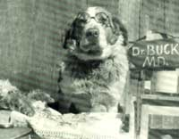

Not all animal doctors are alike.
Most communities these days offer a number of veterinarians within easy hailing distance. Given this abundance, you can pretty much pick and choose the vet who'll best meet your pet care needs. Here are some tips to help.
Communication: Medicine has a highly specialized language all its own. Technical terminology has its place too, but there is absolutely no process in disease or health that cannot be described in everyday language that anyone can understand. Insist on this. If your veterinarian is unwilling to answer your questions so that you understand perfectly what he or she is saying, find a new vet.
Health vs. disease: Nearly all health care professionals today, including vets, are highly trained disease specialists; most of their efforts are directed toward recognizing and treating disease. For some this focus is all-consuming, but others have learned that health is also a part of life's continuum.
Health-oriented veterinarians will take the time to discuss the hows and whys of keeping your pet healthy. If your vet asks questions about your pet's nutrition, the amount of exercise it gets each day and the kind of home environment you provide, you can assume that person is health-oriented.
One of the best ways to tell if a doctor is health-oriented is to observe his or her personal lifestyle. An obese, pasty-faced veterinarian reeking of tobacco smoke, for example, probably isn't particularly concerned about health. (What's more, you can probably expect to lose this vet at an early age.)
You and pet: You hear a lot of prattle about how a good veterinarian must love animals. Well, anyone who puts himself or herself through eight years of college in order to spend the rest of a lifetime caring for animals simply has to have at least some affection for critters. The question to ask yourself is not, Does my vet love animals? It is. Does my vet love his/her job?
Animals are only part of a veterinarian's job. You, as an owner, are the other-and perhaps more important-part. You're the one who must provide food, shelter and an environment that'll keep your pet healthy.
If your vet cuddles and coos over Spot but ignores you entirely, you know that he or she loves pets but doesn't understand that you're part of the relationship too. Does this vet care one whit for your concerns-for your interest in holistic health, for example, or for the amount you can afford to budget for pet care? Does he or she take the time to get to know you better?
QUESTIONS TO ASK A PROSPECTIVE VET
1. What are your normal office hours? Is an appointment required, or can I come in anytime?
2. How do I obtain service in case of an after-hours emergency?
3. Do you feel that proper nutrition is an important part of a pet's health care program?
4. What nutritional program do you recommend for my pet?
5. Do you feel that a good exercise program is an important part of a pet's health care program?
6. What exercise program do you recommend for my pet?
7. Do you offer house calls?
8. What species or breeds of animals do you especially enjoy working with?
9. What are your areas of specialization?
10. Can I feel free to discuss fees with you at any time?
Specialties: Time was when a vet hung out a shingle and expected to treat any and all kinds of animals. Those days are gone; now there are veterinarians who treat only cats, for example, or only birds or racehorses. The profession also has many vets who are trained in a medical specialty; there are veterinary surgeons, ophthalmologists, pathologists. Someday you may need one of these highly trained specialists. Your own veterinarian should be able to refer you then.
Furthermore, there are vets who focus on a particular approach or methodology; there is an organization of vets who concentrate on holistic veterinary medicine, for example, and another that practices veterinary acupuncture.
In any case, it is good to find out if a vet has any particular labor of love in the field, whether it be a specialized type of medical care or kind of pet. For example, is your veterinarian interested in bird medicine, or possibly purebred dogs? Ideally, you'd choose a vet whose pet concerns correspond to yours.
Fees: Can you save money by shopping for the cheapest local veterinary fees? Probably. Like anything else, though, cheapest isn't always best. You can and should, however, feel free to discuss fees with any veterinarian.
Don't be afraid to ask about any and all fees before the service is rendered-especially fees that involve elective surgery or emergency care. When it comes to your pet's care, you have the absolute right to select any level of service you desire. Don't be coerced into care you don't want and can't really afford.
Also, remember that, as with any medical service, you also have the right to get a second opinion. If you have any doubts about a vet's recommendations, get another opinion.
Facilities: Many vets tend to be hung up on facade-the fancier and more grandiose, the better. But good medicine doesn't necessarily require the newest and best in facilities or the latest medical gadgetry.
The level of veterinary medicine practiced in your area will depend-as is the case with human medicine-on the area's population density. Citified practices tend toward the more esoteric in medical amenities; rural practices offer basic health care, not always glorified with high-tech laboratory support or modern medical miracles. Which is best for you? Only you can decide.
You should always, however, expect and demand cleanliness and an odor-free facility. Also, you should expect a staff that is organized, efficient and concerned about your pet's health care needs. Chances are, you'll deal more often with your veterinarian's support staff than with the vet. They're the people you'll talk to first when you call to ask a question. You should expect them to be competent and cordial and helpful.
Emergencies: Will you have immediate access to a vet in the event of an emergency? Where population densities can support them, vet emergency clinics are now popular. Find out how the vet you plan to use handles emergencies. Tape the emergency number to your phone. And make sure that the number goes along with anyone who takes your pet for a walk or romp. A good way to do this is to have the emergency number etched permanently on your pet's collar.
Are you comfortable: This is the final and most important question to ask yourself. If you just plain feel at ease whenever you and your pet are in the vet's office, then you have the right vet. But if you feel a vague discomfort when dealing with the vet, and if your pet seems to feel the same way, look elsewhere.
Dr. Kidd, a long-time contributor to Mother Earth News, is a Kansas-based veterinarian with advanced training in pathology and clinical pathology. He has a special interest in holistic health care for animals and their owners.
|
 ©THE BETTMANN ARCHIVE |
|
|